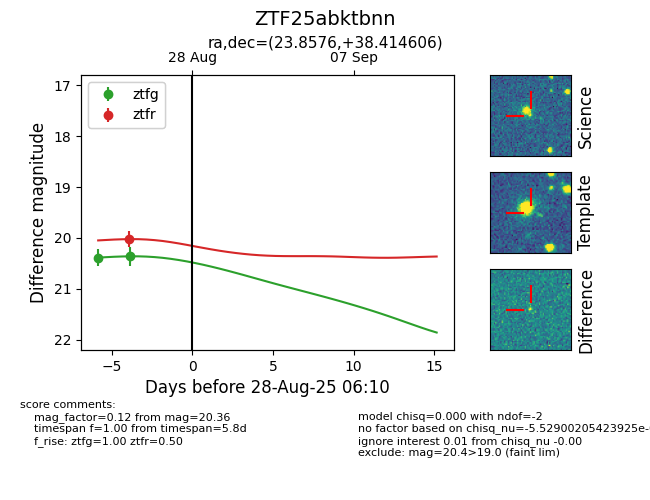

Target ZTF25abktbnn at 2025-08-28 10:39, see:
FINK: fink-portal.org/ZTF25abktbnn
Lasair: lasair-ztf.lsst.ac.uk/objects/ZTF25abktbnn
ALeRCE: alerce.online/object/ZTF25abktbnn
alt names
ZTF25abktbnn (ztf,fink)
coordinates:
equatorial (ra, dec) = (23.8576,+38.41461)
galactic (l, b) = (132.3240,-23.65352)
photometry
last ztfg=20.36, ztfr=20.02
2 ztfg, 1 ztfr detections
